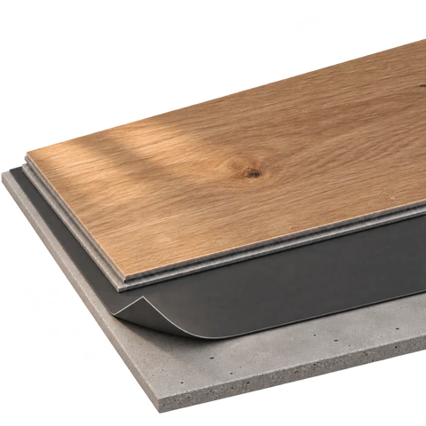

На подложку
Плашки соединяются замками и лежат на подложке, без приклеивания к основанию.
Плюсы
- Обычно дешевле монтаж. Нет расходов на монтажный клей и его нанесение.
- Быстрее переход к эксплуатации. После сборки не нужно ждать отверждения клеевого слоя.
- Проще снять покрытие. Это удобно, если в будущем понадобится доступ к основанию или смена пола.
- Можно подобрать акустику. Совместимая подложка помогает уменьшать передачу ударного шума — результат зависит от всей конструкции.
Минусы и ограничения
- Нужно оставить полу свободу. Неподвижная мебель и примыкания не должны зажимать покрытие.
- Подложка требует точного выбора. Слишком мягкий материал может увеличивать прогиб и нагрузку на замки.
- Шаги могут звучать более гулко. Особенно при пустотах под покрытием и неподходящей подложке.
- Есть дополнительный слой. Он увеличивает высоту конструкции и сопротивление передаче тепла от стяжки.